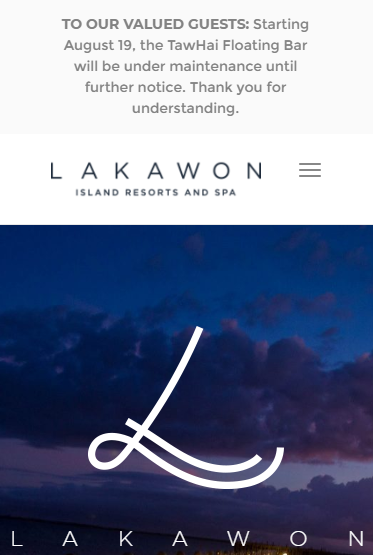

Hick's Law
Lazada
https://www.lazada.com.ph/

In this website, there are so many options for users to choose from. As a result, users have to take time deciding and choosing what they want from the website. Mostly, online shopping website have this kind of Design Principles.
PARC: Alignment
iWant
https://www.iwant.ph/
For this website, it perfectly shows the alignment of each of the TV Shows available. Users will easily picked the TV Show they want as they scroll down their mouse or use the arrow left or right.
PARC: Contrast
Lakawon Island Resort and Spa
https://lakawon.com.ph/
In this resort and spa site, we can see the contrast of the white text and blue background. The light color of the text rise because of the dark background. This kind of design principle can caught users attention and will want to browse the site.